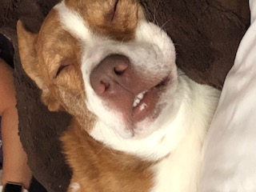
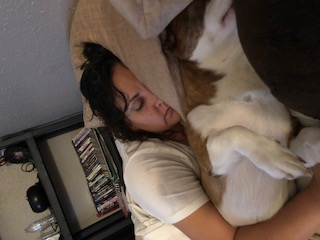

Time to Recharge
According to dogster.com, Corgi sleep patterns vary by age. Puppies need anywhere from 18 to 20 hours daily as they grow. Adults will get most of their sleep at night and average between 12 to 16 hours. Those daily numbers can increase to 18 hours once they reach the 10-year mark. Can you imagine having to sleep that long to recharge?
The Art of Snuggling
One of the perks of the Corgi breed needing so much sleep is they have a lot of time to master their snuggling game. Every night, our boy choregraphs a snuggling routine that involves the whole family. He will start out being spooned by me and will wake up spooning me. When I leave for work, he will start the whole routine over with his dad.